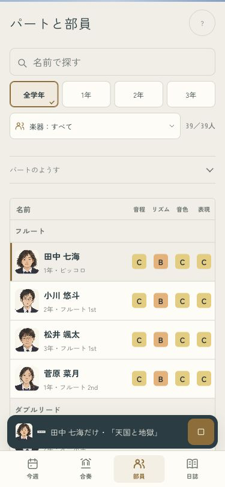
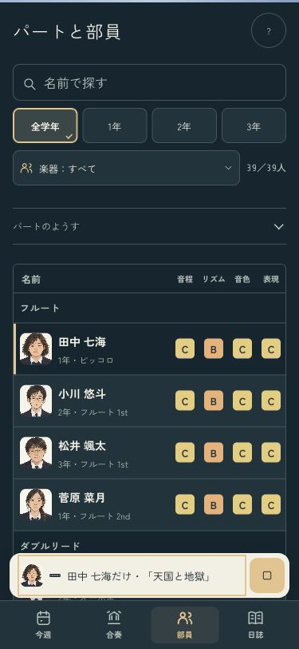
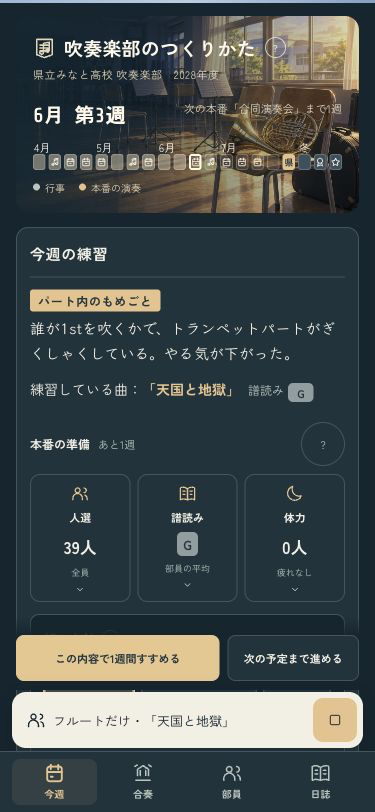
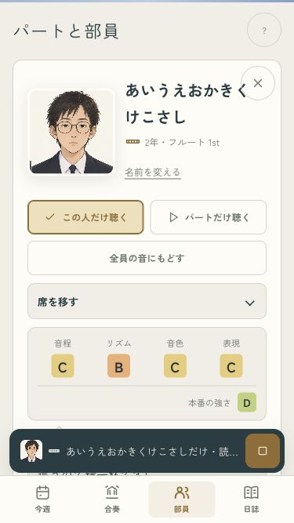
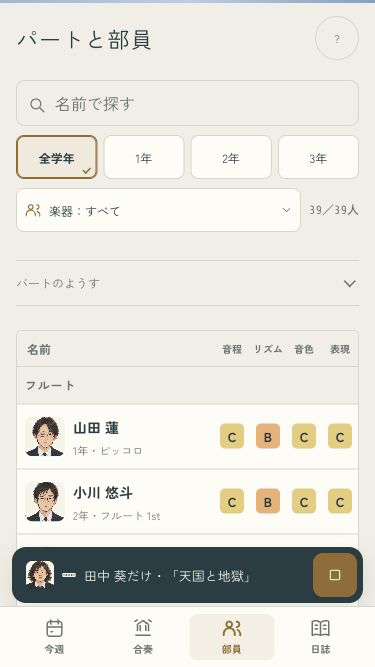

B · 舞台の中へ
どの子の音か、顔で分かる。
別のタブで聴いている間も、再生バーに本人の顔と楽器を表示。パートだけを聴くときはパート名に切り替わります。押すと演奏を続けたまま合奏へ戻れます。


パートの音・読み込み待ち・録音時の本人



全15曲・実際の音との対応・録音時の本人・1年分の進行を確認済み。
iPhoneへ導入済み。今回は端末ロック中のため起動は未確認です。
ミラーリングなし · codex/design · pushなし · 変更と確認の記録